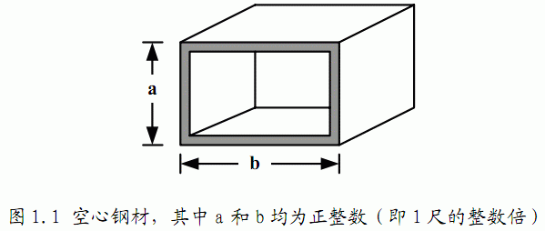
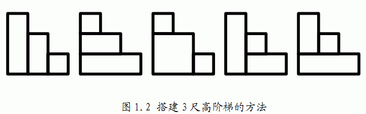

暑假期间，小龙报名了一个模拟野外生存作战训练班来锻炼体魄，训练的第一个晚上，教官就给他们出了个难题。由于地上露营湿气重，必须选择在高处的树屋露营。小龙分配的树屋建立在一颗高度为 $N+1$ 尺（$N$ 为正整数）的大树上，正当他发愁怎么爬上去的时候，发现旁边堆满了一些空心四方钢材（如图1.1），经过观察和测量，这些钢材截面的宽和高大小不一，但都是 $1$ 尺的整数倍，教官命令队员们每人选取 $N$ 个空心钢材来搭建一个总高度为 $N$ 尺的阶梯来进入树屋，该阶梯每一步台阶的高度为 $1$ 尺，宽度也为 $1$ 尺。如果这些钢材有各种尺寸，且每种尺寸数量充足，那么小龙可以有多少种搭建方法？（注：为了避免夜里踏空，钢材空心的一面绝对不可以向上。）

以树屋高度为 $4$ 尺、阶梯高度 $N=3$ 尺为例，小龙一共有如图1.2所示的 $5$ 种搭建方法：

 Comet OJ
Comet OJ